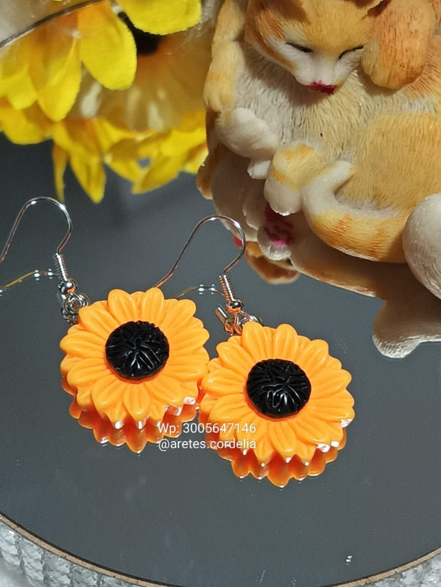
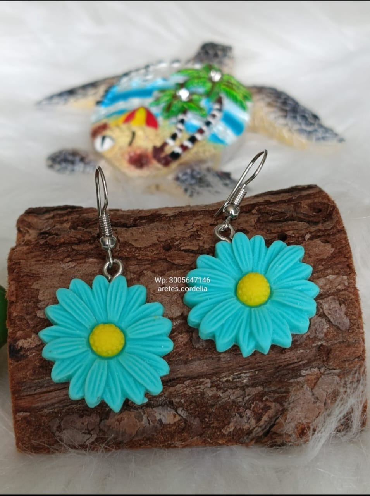
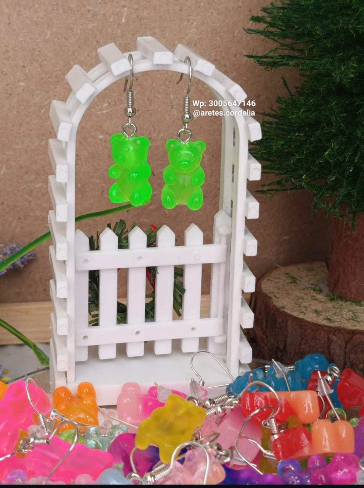

Bienvenidos a esta página de aretes
Aretes
Aquí se manejan aretes de todos los estilos y colores, ¡anímate a usar uno
de estos aretes tan espectaculares, tales como:
- Aretes de gatitos
- Aretes de ositos
- Aretes de peces
-
Aretes de naturaleza:
- Aretes de flores
- Aretes de frutas
- Aretes de hojas
- Aretes de estrellas
Además de aretes de animales también se tienen de:
- Aretes de corazones
- Aretes de luna
- Aretes de sol
- Aretes de nubes
- Aretes de arcoiris
Tabla de precios
| Tipo de Arete |
Material |
Precio |
| Aretes de gatitos |
Plata |
$15 |
| Aretes de flores |
Oro |
$25 |
| Aretes de estrellas |
Acero |
$10 |
| Aretes de corazones |
Plata |
$20 |
Galería de Aretes



Si quieres ver más aretes como estos puedes ingresar a:
Cordelia.com